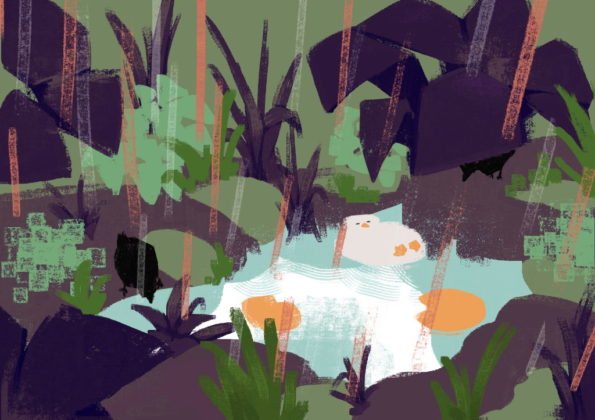

時之 SHIZHI
個人自我介紹網站
2026 PORTFOLIO
特技是邊走邊睡
首頁 / 關於我
興趣 / 坑與追番
20
喜歡的歌 / 音樂
6
創作 / 圖畫與影片
6
社群 / 聯絡方式
3
分享頁面
首頁
>
創作專區 (CREATIONS & VIDEOS)
創作專區
CREATIONS & VIDEO LOOKBOOK
收錄原創角色設定、近期塗鴉、歷年畫作以及實體造型動態影像紀錄。
總計 6 件作品收錄
ILLUSTRATIONS ｜ 平面圖畫創作
（點擊任何圖片可開啟全螢幕高解析燈箱檢視）

點擊放大
點擊放大
VIDEOS ｜ 動態影像展示
（支援電腦端直接播放與全螢幕觀看）
🎬 VIDEO 01
您的瀏覽器不支援影片播放。
🖥️ VIDEO 02
您的瀏覽器不支援影片播放。
🎭 VIDEO 03
您的瀏覽器不支援影片播放。
✕